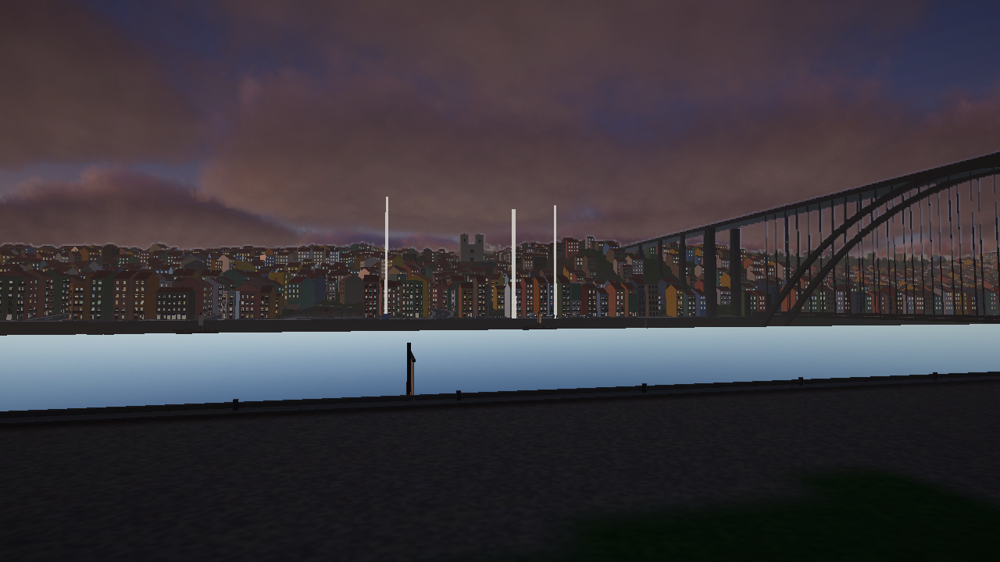
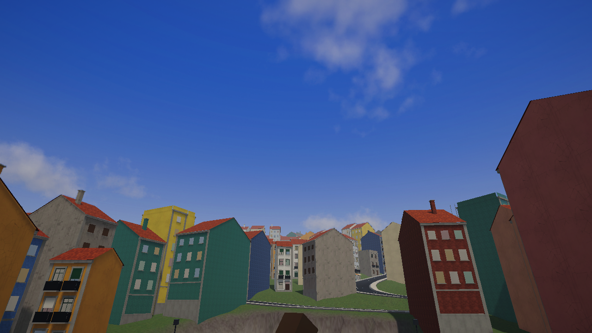

Project Porto
An open-world game set in a fictional Porto, from the river up to the top of the hill.
An open-world game set in a fictional Porto, from the river up to the top of the hill.
One day and one night in a city that carries on whether you are watching or not.
Project Porto is a third-person open-world game built around the Ribeira, the quay along the Douro, and the steep streets that climb away from it. It is Porto as we remember it, bent a little to suit the game.
Traffic moves, people eat, shelter from the rain and go home, and the police are felt long before they are seen. The city is the thing we are making; everything else happens inside it.
Narrow streets, stairways and tall houses. Cars have to climb, and people have to take the shortcuts.
Day turns to night and the sky changes its mind. Rain fills the streets and the puddles stay.
Pedestrians with routines, shops with interiors, traffic that behaves like traffic.
The law reacts to what it sees. There is no counter telling you how much trouble you are in.

The same view, clear day and dusk. Work in progress.

Up the hill: weather and time of day change the whole street.
In development, for PC.
The first playable area covers the Ribeira and the hill above it, plus the far bank. Everything on this page comes from the work-in-progress build and will change. We will share more when it is ready to be seen.